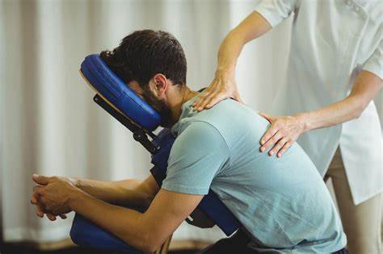
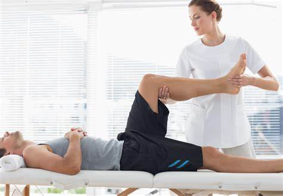
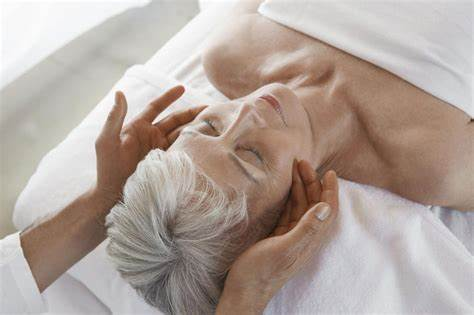
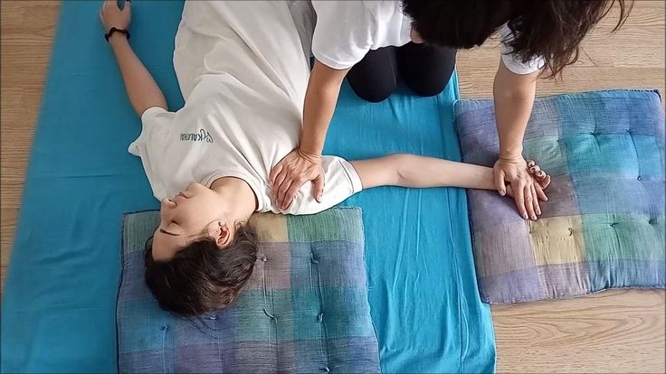

Se puede elegir entre muchos estilos de masaje. Algunos son para aliviar dolencias que podemos sufrir o para curar lesiones, ayudan con ciertas enfermedades y mejorarán el bienestar general, también mental y el estado de ánimo.
¿Cuáles son los mejores masajes?
Es posible que hayas notado que existen diferentes estilos de masaje y que unos son más populares que otros. En muchas ocasiones depende de las modas y no de tus propias necesidades.
Hay muchos tipos de masaje, que van desde los que necesitan de movimientos largos y suaves hasta los de movimientos cortos y haciendo mayor presión sobre el cuerpo. Algunos masajistas utilizan aceites y lociones, otros no los usan.
Puedes darte un masaje de forma esporádica, o hacerlo habitualmente. Esto último es lo que te recomendamos, ya que podrás prevenir y mantener tu cuerpo siempre en forma. Un masaje puede durar desde 5 minutos hasta 2 horas.
Antes de que puedas decidir cuál es el mejor masaje para ti, debes hacerte la siguiente pregunta. ¿Quieres un masaje para relajarte o controlar el estrés? ¿O necesitas aliviar los síntomas de alguna lesión o enfermedad?
Antes de reservar un masaje, pregunta qué tipos de masajes tienen en el centro estético y cuál es su especialización. El masajista puede personalizar tu masaje según tu edad, condición o cualquier necesidad u objetivo especial para ti.
Ofrecemos estos tipos de masajes
Masaje Relajante
Disfruta de un masaje suave y envolvente que te ayudará a aliviar el estrés y la tensión acumulados.

Masaje Terapéutico
Este masaje se enfoca en aliviar dolores musculares y tensiones específicas.

Masaje Deportivo
Perfecto para atletas y personas activas, este masaje ayuda a prevenir lesiones y mejorar el rendimiento.

Masaje de Tejido Profundo
Este masaje utiliza técnicas intensas y presión profunda para aliviar tensiones crónicas.

Masaje Tailandés
El masaje tailandés combina estiramientos y movimientos de yoga para liberar la energía bloqueada.